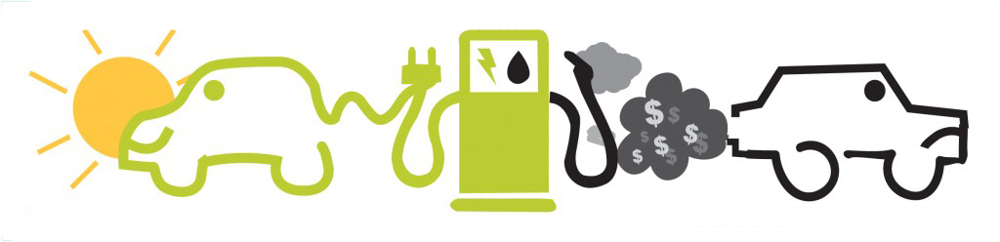

Het grootste verschil tussen de twee soorten auto's is natuurlijk het feit dat een elektrische auto geen slechte gassen uitstoot tijdens het gebruik en dus beter is voor het milieu als er mee wordt gereden.
En ander verschil is het "tanken" van de auto. Het tanken zoals we dat nu kennen met benzineauto's is dat we naar het tankstation gaan en daar de auto weer voltanken en doorrijden. Met een elektrische auto kan je gewoon thuis "tanken" door de auto met een stekker aan een oplaadpaal te hangen. Een ander voordeel hiervan is dat de energie waarmee je de auto oplaadt op een natuurlijke manier gewonnen kan worden. Het enige nadeel aan het opladen van een elektrische auto is, is dat het lang duurt. Het kan tot wel 8 uur duren voordat je auto volledig is opgeladen.
Het bereik tussen beide auto's verschilt ook. Als je een goedkopere elektrische auto hebt kun je tot zo'n 180km rijden op een lading. Voor de mensen die in een Tesla rijden kan dit oplopen tot maximaal 500km op een lading. Met een benzineauto is het mogelijk om bijna twee keer zo ver te rijden als een Tesla op een tank. Ook moet je er rekening mee houden dat je niet zomaar overal je elektrische auto kan opladen dus je moet zeker weten dat je de afstand die je moet rijden daadwerkelijk kan halen.
Een ander belangrijk verschil tussen de auto's is de aanschafprijs. Op dit moment zijn de prijzen van elektrische auto's nog erg hoog omdat ze nog niet lang op de markt zijn en de productie van de accu's voor in de auto's is nog erg hoog. De prijs verschillen zullen in de loop der jaren wel dalen en dan kunnen meer mensen een elektrische auto betalen.
